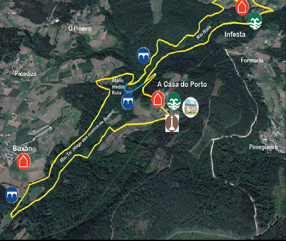
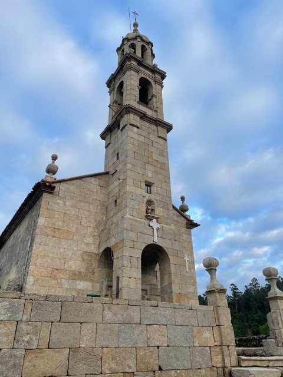
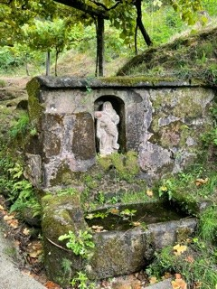
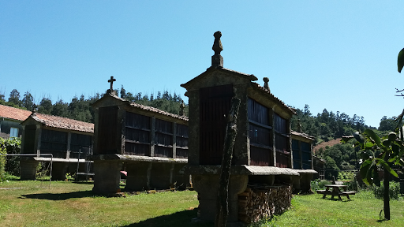
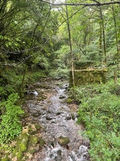
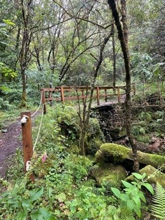

Ruta circular de pouca dificultade con inicio e final na igrexa de San Mamede de Rois. A lonxitude é de 8,5 km pero podemos facer só a metade, como explicaremos máis adiante. O percorrido discorre polas parroquias de Rois e Buxán e pasa polas aldeas de Rois, Infesta, A Casa do Porto e Buxán.
| Inicio | Igrexa San Mamede de Rois |
| Fin | Igrexa San Mamede de Rois |
| Distancia | Longa: 8,5km | Curta: 4km |
| Tipo | Circular |
| Duración | 2h Aprox. |
| Dificultade | Media-baixa |
Igrexa San Mamede de Rois
“O actual edificio é de cruz latina. A fachada ten a particularidade de que é a única entre as igrexas deste concello na que a torre campanario empeza dende o chan, separada a case dous metros da parede, formando un pórtico.Ten tres interesantes retablos. O máis antigo é o retablo da virxe do Rosario. Hai un cadro lenzo de grandes dimensións no que se representa a virxe sentada co neno Xesús sobre o xeonllo dereito.” “O punto de partida é a igrexa de San Mamede, que ten de particularidade que a súa torre está situada na parte central da fachada, enriba da porta.”

Fonte de San Amaro
“Trátase dunha monumental fonte, con boa auga para beber e refrescarse.” “O segundo punto de interese é a fonte de San Amaro, na aldea de Infesta."

Hórreos da Casa do Porto
“Conxunto de hórreos restaurados recentemente nunha eira da aldea de Casa de Porto”

Rego dos Muíños
“A ruta transcorre paralela ó Rego dos Muíños, unha paraxe espectacular onde podemos ver aínda as estruturas dos diferentes muíños e escoitar o murmurio do río e o pío dos paxaros”.

Ponte e pasarelas
“Neste bosque típico de ribeira ben conservado abundan as especies autóctonas como freixos, ameneiros, carballos, etc. Que refrescan o ambiente en días calurosos. Cun percorrido curto o río Rois mantén as características dos ríos torrenciais con augas cristalinas e numerosas zonas chas, é un dos afluentes principais do río Sar.” “Seguindo ó carón do río, chegamos ó alto do Píndalo, unha zona moi escarpada chea de penas que dá nome a esta ruta”.
